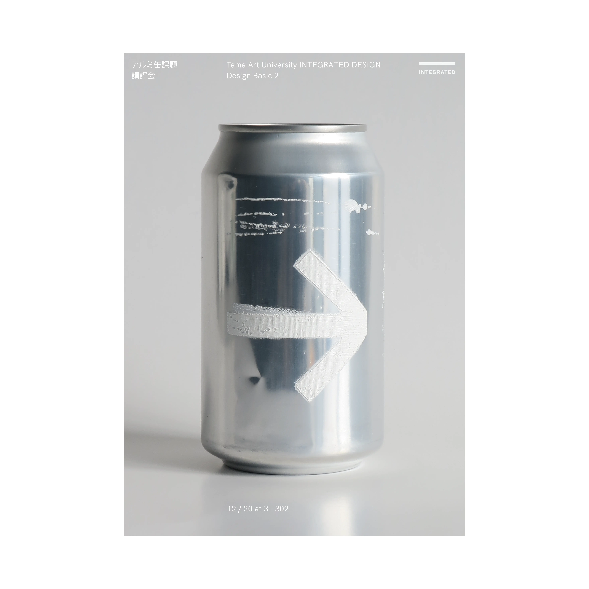
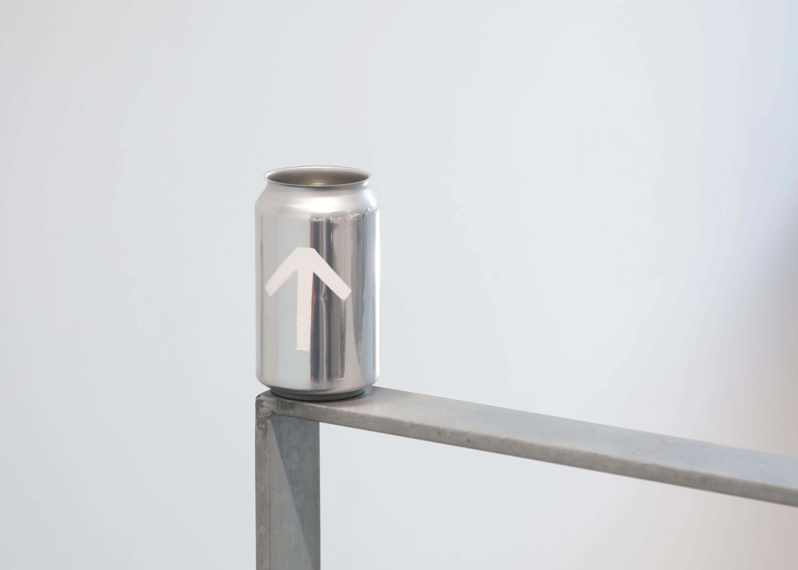
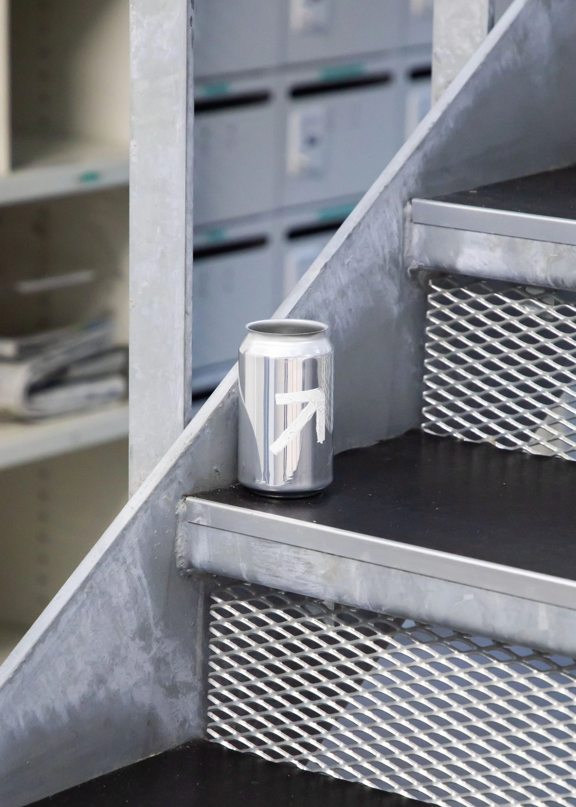
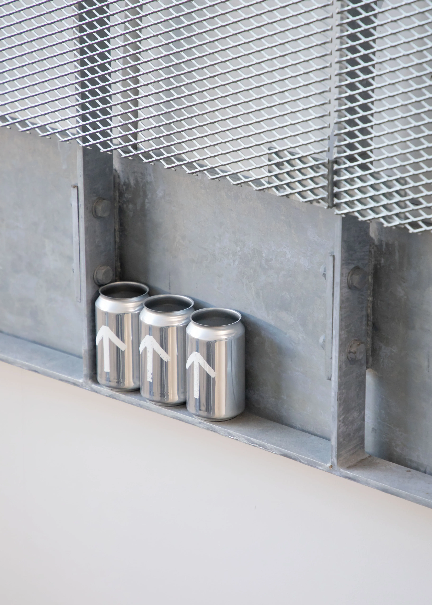
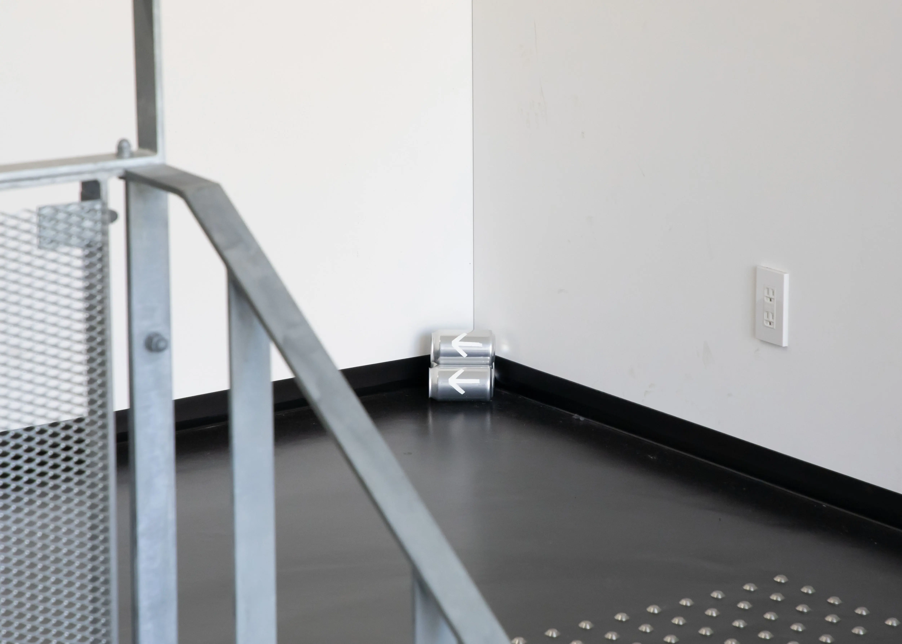
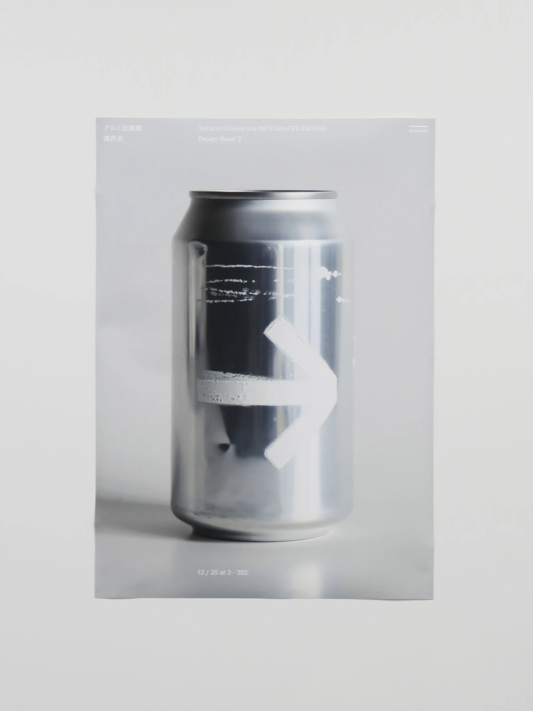
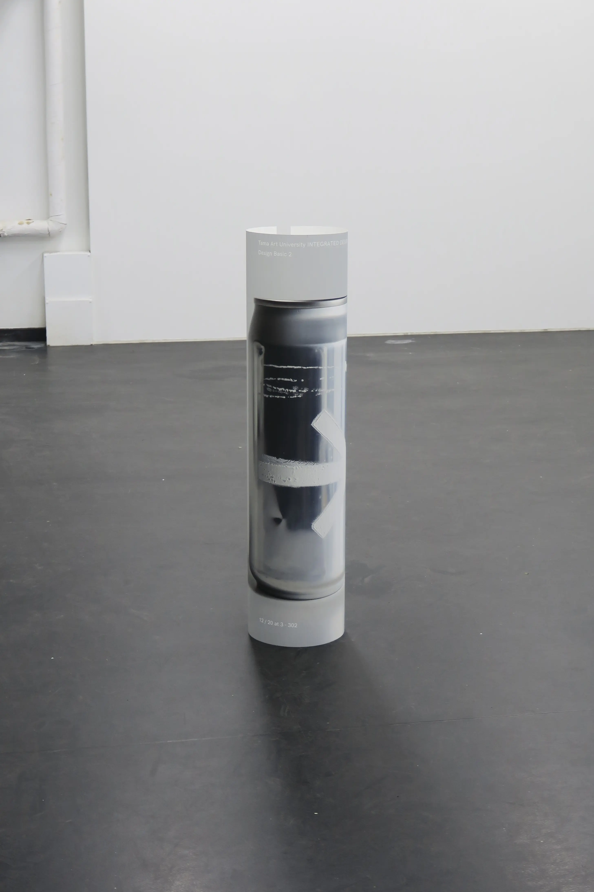

アルミ缶のサイン計画
アルミ缶を再利用し、シルクスクリーンを用いて制作したサイン。空になった後に捨てられるものを再利用することで、空き缶の新しい使い道を探るスタディ。
[Sign]
AD,D,P : Nozomi Terashima, Arata Nakagawa
2023








アルミ缶を再利用し、シルクスクリーンを用いて制作したサイン。空になった後に捨てられるものを再利用することで、空き缶の新しい使い道を探るスタディ。
[Sign]
AD,D,P : Nozomi Terashima, Arata Nakagawa
2023






